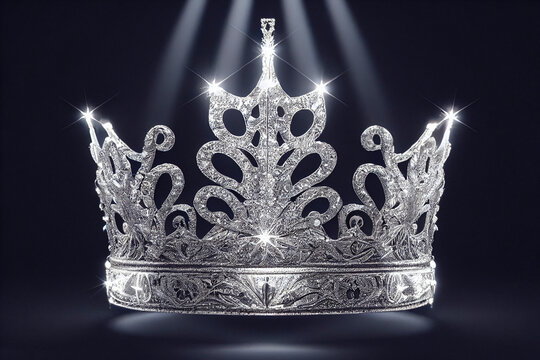
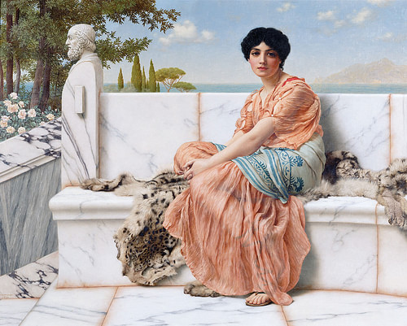
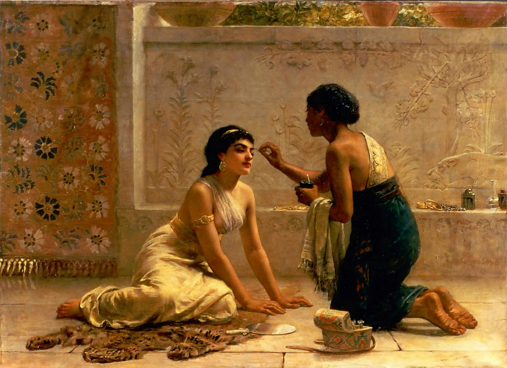
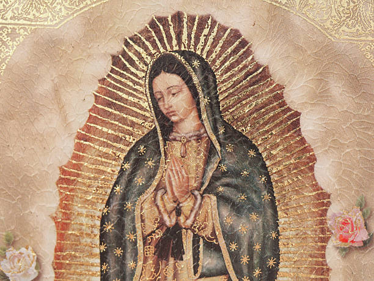
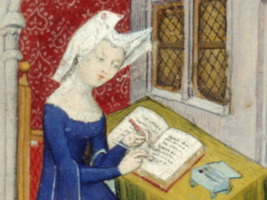

5 Medieval Women Who Absolutely Slayed (In the Christine de Pizan Kind of Way)
Because history is more than just the men. These awesome women show us how it was to be an OG girlboss

Picture this: you're reading the classic The Book of the City of Ladies, just vibing, when a thought suddenly strikes you:
"All these women are pretty epic. I wonder which of them are the most awesome?"
No? Just us? Well, we definitely have. And we made a list about it!
But first, what kind of women made it into Christine de Pizan's legendary city?
Besides being total badasses, they had to be Noble, Loyal, Brave, Intelligent, and Virtuous, just to name a few key traits.
So with that in mind, behold: the most awesome women mentioned in The City of Ladies.
(And no, unfortunately, Olivia Rodrigo is not on the list 😢)
#5 - Empress Nicaula (Part 1)

This queen (literally) was one of the first women mentioned in the book. Surely that means something, right? Christine talks about
her in glowing terms. She '...had a profound knowledge of the Scriptures and sciences.' Apparently, she also
"...was so proud that she never condescended to take a husband nor felt the need to have a man by her side." That was pretty rare in that time,
especially considering that you often needed a man to survive as a woman for most of history. Pretty awesome in our opinion.
#4 - Sappho (Part 1)

Next on our list is the beloved Sappho. Christine basically calls her a genius:
“But of all the gifts she was blessed with, one surpassed all the others and that was her keen intelligence."
Part of the reason Christine is writing this book is because the literature of her day always attacked women’s intelligence
by saying they were not as smart as men. Sappho is a prime example of how this is NOT true. She was fighting stereotypes even
before it was cool.
#3 - Queen Esther (Part 2)

Most of us who read the Bible know who Queen Esther is. If you’re a heretic and don’t, then allow us to jog your memory.
Imagine this: you're a young Jewish woman in a foreign empire, and one day you find out that your people are about to be wiped out.
What do you do? Risk your life to save them, of course! Esther didn’t sit around waiting for someone else to take charge—she marched
straight up to the king, uninvited (hello, death sentence), and said, “I’m not letting this happen on my watch.” Her bravery?
Unmatched. Her wisdom? Off the charts. This woman had the courage to change the fate of a whole nation, and she did it with grace
and style. That is why she gets a spot in the City of Ladies and why she is third on our list.
#2 - Virgin Mary

Let's be real: if there was ever an MVP in the world of women, it’s the Virgin Mary. First off, this woman was chosen by
God Himself to carry Jesus—you know, no big deal. 🙃 Talk about divine responsibility! Mary wasn't out there looking for
fame or glory; she was just quietly saying “Yes” to the universe (and to God’s plan, obviously) in the most humble way possible.
She didn’t let a little thing like being an unwed mother in a time when that could seriously ruin your life stop her from being
literally the mother of God. Christine de Pizan calls her the ultimate model of faith and strength, a compliment that is not
thrown around willy-nilly. She inspires us and millions of others, and that’s why she’s second on our list.
#1 - Christine de Pizan

Ahh, the author herself: Christine de Pizan. Some might call her the first feminist. She is the first on our list because, without her, this list might not even exist. The Muses appeared to her
after all. In fact, the Muses tell us why they visited her "...you deserved to receive a visit from us because of your great love for true knowledge,
which you pursue through long and constant study.” If that is not a flex, I don't know what is. She is the mastermind of the work and she is the true embodiment
of all the themes she tries to teach in her book. She truly is the OG girlboss 💪
What change does she seek?
All joking aside, all of the women mentioned in The City of Ladies are incredible and are examples to us all. What changes does she seek? A more equal and fair society. Abolish misinformation about women.
A future generation of women that are strong and independent. If nothing else, inspire all to fight for their rights as individuals. I am sure that, if Christine were still here today, she would be amazed at
the impact she had and the vast improvements that have taken place in society since her passing.